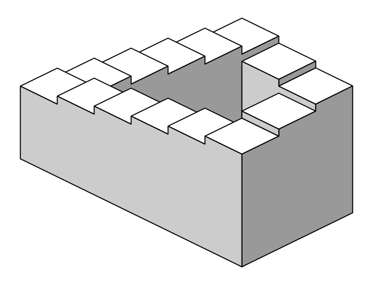

Currently, the field of computer graphics grow complete and sophisticated. One of the most unique properties of computer graphics is that it can create things "unreal": from a world without gravity to a dozen self-rotating balls, from simulating a car accident to a complex blobbing shape, computer graphics offers the power of creating impossible.
Meanwhile, the imagination of higher spacial dimensions are thriving as ever. Visions begin to take place in fiction novels: for example, in Cixin Liu's Threebody III: Death's End, the spaceships from the Earth had encountered 4-Dimensional fractions in the space.
Having considered these two different aspects, I decided to start a project on the modelling of 4D Objects. The desired final outcome of this project will be a 4D-Modelling Software, supporting the main modelling processes of current 3D Modelling Softwares, for example, viewing, intersecting, UV Mapping, illumination, and other functions (see the figure below). Of course, as a three-dimensional creature, our brain cannot process a 4D Object directly; therefore, this application provides two different methods of decreasing dimensions: slicing and projection.
I also want to model several interesting optical illusions in this software, for instance, the Penrose stairs (shown below). These optical illusion objects theoretically exists as 4D objects. Also, a paper may be written to describe the process.
A Depiction of the Famous Penrose Stairs